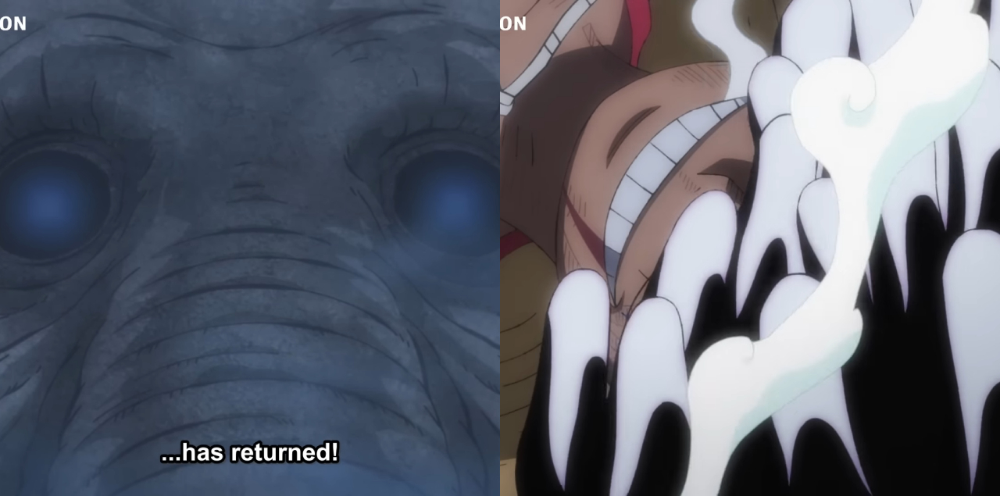

29 de Julho
28

Joyboy Retornou!
No episódio 1070, vemos as consequências do fim desta luta. No telhado, o coração de
Luffy está passando por uma transformação que, de acordo com o elefante Zunesha, soa
como os Tambores da Libertação. Dessa forma, o personagem ativa a Hito Hito no Mi
Modelo: Nika: "o Joy Boy retornou".